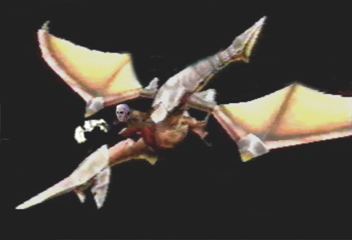
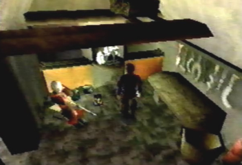
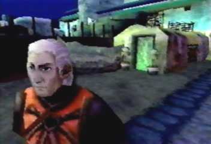

Radgam the true 4th Dragon Rider Theory
By Jeremy Prusak
 Radgam the 4th Dragon Rider. |
|
If you look at the many dragon riders,
Lundi, the Sky Rider, Kyle, and Edge, from each Panzer Dragoon game, they
have all acquired and used an ancient age gun on their adventures with
the dragon. This aspect of the Panzer Dragoon Series brings us to the
hunter Radgam in the Town of Zoah. When you visit his house in the Liberal
District, you will find an ancient age gun on a shrine, similar to the
one all of the previous dragon riders used. Since every Dragon Rider possessed
an ancient age gun on their journey with the dragon, could Radgam himself
be the true 4th dragon rider?
(It's broken now, but was a powerful weapon a long time ago.) {Radgam:} {Edge:} {Radgam:} Could this imply that Radgam and his comrades were once on an adventure with the dragon, fighting countless battles with ancient age monsters, just like edge, Gash and Azel? {Radgam:} {Edge:} Did Radgam have a greater purpose, a journey with the dragon? Did he once stop an ancient creation from destroying the world in an unknown adventure? {Radgam:} Was Radgam once a Seeker? Could Seekers including Gashe’s mentor Lundi, have aided him in his journey with their vast knowledge of the Ancient Age, resulting in a tragedy? {Radgam:} Good advice to someone who potentially had a great adventure with the dragon. He most certainly would have seen many things in his adventures and would have experienced many battles. It is very possible that his adventure could have taken place just after Panzer Dragoon (Imperial year 90 A.F.- 99 A. F.) and ended just before PDS started. An adventure in a different location than the places in the Panzer Dragoon universe we have already seen. We will never truly know if Radgam was a dragon rider, but his possession of an ancient age gun just has to make you wonder…. Was he the true 4th dragon rider? |
 Radgam may have a secret past, that he keeps to himself. |
Radgam's Ancient Age gun. |
 He lives a secluded life, within the Town of Zoah. |